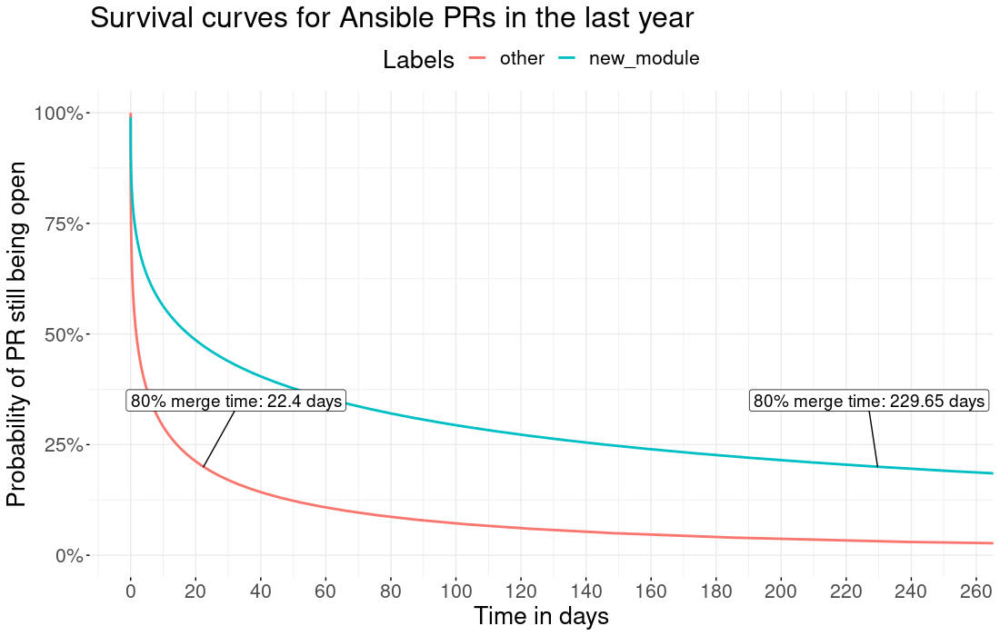

Thoughts on Restructuring the Ansible Project
Thoughts on Restructuring the Ansible Project
Ansible became popular largely because we adopted some key principles early, and stuck to them.
The first key principle was simplicity: simple to install, simple to use, simple to find documentation and examples, simple to write playbooks, and simple to make contributions.
The second key principle was modularity: Ansible functionality could be easily extended by writing modules, and anyone could write a module and contribute it back to Ansible.
The third key principle was "batteries included": all of the modules for Ansible would be built-in, so you wouldn't have to figure out where to get them. They'd just be there.
We've come a long way by following these principles, and we intend to stick to them.
Recently though, we've been reevaluating how we might better structure Ansible to support these principles. We now find ourselves dealing with problems of scale that are becoming more challenging to solve. Jan-Piet Mens, who has continued to be a close friend to Ansible since our very earliest days, recently described those problems quite succinctly from his perspective as a long-time contributor -- and I think his analysis of the problems we face is quite accurate. Simply, we've become victims of our own success.
Success means growth, and growth means more users, more customers, more contributors, and more responsibilities -- which bring increases in complexity. We've continued to build tools like Ansibot to help us manage that complexity, but as we continue towards hyperscale, even as we merge more and more community code, we're seeing more pull requests and issues fall through the cracks.
Consider the following visual representation of the evolution of contributions to the Ansible project:

Most of our current challenges stem from increased complexity that our simple model was not built to handle. If we want to break through our current constraints, we're going to need to build a new organizational model to do it.
That's exactly what we've been working on -- and it's taking some time, because it's a complex set of challenges -- but we're getting there.
So let's discuss some of our key challenges.
First, there's the growing support challenge.
Originally, Ansible had a simple policy: if we shipped it, we supported it. In the very beginning, this policy made perfect sense; we had comparatively few modules, and we also had comparatively few customers. The Ansible support team knew all of the modules well enough to provide support for all of them, to anyone who was willing to pay for that support.
In truth, though, supporting modules ourselves can be a tricky proposition, and the larger we grow, the trickier it becomes. The majority of our modules are community maintained. We obviously know Ansible itself very well, but we don't know the community maintained modules as well as our contributors do. In some cases, we may not even have access to the underlying software or hardware with which the modules interface; in such cases we are completely reliant upon our community to keep the modules working.
Some of our community maintainers are exceptionally responsive. Some are less responsive. That's the nature of community developed software. But because all of the modules live in the same place, and are a part of our "batteries included" model, many people -- including paying customers -- don't realize that such a distinction exists.
It's unfair for us to place an enterprise support burden on volunteer contributors. It's also important that we're as clear as possible with our customers about what is fully supported as part of their subscription, and what is not.
Next, there's the lifecycle challenge.
As Ansible itself becomes more mature and used by more enterprise customers, the lifecycle of Ansible is slowing down. Even until fairly recently, we would cut a major release of Ansible every four months, but our most recent release cycle was eight months, and that slower release cycle will become the rule.
This is a challenge because it means that over time it will take longer for new code to reach users. This will be especially constraining for our partners; under the current structure, they can only update their modules and plug-ins on our schedule. We've already received feedback from many partners that they want the ability to release their own modules and plugins independently of our release cycle, and as our release cycle continues to slow down, we expect these calls to grow louder.
Then, there's the challenge of the rising bar.
Everyone, both partners and community, want modules to be ever better: better written, better tested, more secure. With every release, we try to raise the quality bar.
For the upcoming Ansible 2.9 release, for instance, we expect soon to be asking contributors to provide basic integration tests for every module.
That rising bar comes with its own challenges. How do we handle contributions that have previously been good enough, but no longer meet the new standards? How do we deal with contributors who are not necessarily able or willing to do the work necessary to reach these standards? What do we do about existing modules that don't keep up with our rising quality standard -- do we mark them in some way, or do we kick them out of Ansible entirely, even if they're relatively stable modules that a lot of people depend upon? We continue to grapple with these questions.
Which brings us to the new module contributor challenge.

the average merge time for PRs. New Modules (blue) vs everything else (Red). Notice that over the past year, on average 80% of non-new-module PRs are merged within 22.4 days.
As the quality bar goes up, our ability to bring new contributors onboard goes down -- or at least slows down. It just takes contributors more time and effort to get their new modules accepted than it once did.
It's comparatively easy to bring in PRs to extant modules, because those modules generally have maintainers that have earned our collective trust. Our PR merge numbers for extant modules are actually quite good (we can always improve, of course).
But new modules require a higher degree of vetting, because we're not only vetting the code, we're also implicitly vetting the contributors of that code for their interest and ability to maintain that code.
Given our current structure, this is an unfortunate but necessary barrier. Our support challenge makes us more reluctant to merge new modules without strong assurances that the maintainer will be willing and able to maintain those modules to increasingly stringent requirements.
At the heart of all of these challenges is the fact that we've got one code base that's supporting two categories of participants that have different primary interests.
Enterprise users and partners need, more than anything, a stable and well supported platform that they can trust to automate their IT infrastructure.
But our community users and contributors need something else, and that's what Ansible has always delivered in the past: an easy way to install Ansible, and easy ways to contribute to Ansible.
To those of us who lived through the old days at Red Hat, these problems are eerily similar to the problems we experienced around the original Red Hat Linux product -- problems that led to the creation of the Fedora Project and Red Hat Enterprise Linux. Our problems aren't identical, but similar.
Which is why we believe that the solutions should be not identical, but similar.
So let's talk about our proposal to solve some of these challenges.
From a development perspective, Ansible would be broken out into different components:
-
The core engine, which would essentially be the platform to run everything else. Keeping this engine stable, more secure, and well-tested will be critically important for everyone. The Core Team would be responsible for maintaining this engine. Community contribution policies would be the same as present policies.
-
The core modules and plugins, which are the modules and plugins that the Ansible team would support directly. These would be the most used modules and plugins (think template, copy, lineinfile, and so on.) Community contribution policies would be the same as present policies, though no new modules would be introduced.
-
The community modules and plugins, which would be where most non-core modules and plugins would live. Community contribution policies would be relaxed to some degree, to help onboard new content and new contributors, but we would still maintain a bar of quality to help ensure that community content would be functional, documented, and usable. The separate structure would allow the community to be much more effectively involved in the curation process.
-
Various supported partner modules and plugins, which would be broken out and managed more directly by partners. Community contribution policies would be up to the discretion of the individual partners.
All of these different components would be built in the form of Ansible Content Collections, which we first introduced in Ansible 2.8.
From a deployment perspective, Ansible would be delivered in one of two fundamental ways:
-
A batteries-included method, which would be very similar to how Ansible is delivered currently: a bundling of the core engine, all of the core modules and plugins, all of the community modules and plugins, and select partner modules and plugins, all via collections. There would be no official Red Hat support offered for this method.
-
A supported enterprise method, which would be only the fully supported subset of that content: the core modules and plugins, and select partner modules and plugins, all via collections. This would be the method that would be supported by Red Hat as part of the Red Hat Ansible Automation product. Customers would retain the ability to install and use any additional content at their discretion, but the separation between Red Hat supported content and non-Red Hat supported content would be much more explicit.
Both of these methods would depend heavily on Ansible Galaxy as the de facto delivery mechanism, which we would plan to improve substantially to handle the increased traffic load.
Some may note that there are similarities between this new proposed structure and the Ansible Extras structure that we moved to, and then moved away from, a few years back. It's true; there are definite similarities, and many of the advantages and potential disadvantages are the same. It's our hope, and intention, to learn the lessons from that previous attempt to gain the advantages while also mitigating the potential disadvantages.
We believe that these structural changes will help Ansible keep our strong community focus, while also providing the structure necessary to support our growing base of partners and customers. We recognize that these are significant changes, which is why we plan to move very carefully towards them. We want to make sure that we understand the implications of these changes before we make them. None of these changes are imminent, but we believe that we've come to a point at which we are prepared to discuss the possibilities.
There are many questions yet to be answered: infrastructure questions, licensing questions, release policy questions, and others. We will be discussing some of those questions in an upcoming webinar.
We will also be digging deeply into these questions at our community contributor conference at AnsibleFest Atlanta in September. We hope to see our contributors there in person, but we strive for full remote participation as well, as always. Please join us however you can.
In the early days of Ansible, we could only have dreamt of this kind of success. In our seven years of existence, we have built one of the top open source projects in the world, with a dedicated community pushing us and supporting us from the very beginning. Had we imagined the kinds of challenges we face today, we would surely have put them in the category of "good problems to have."
But "good problems" are still problems, and if we fail to solve them, they won't stay "good problems" for long. It's time for us to take the next step, so that we can continue to be a reliable partner for all of our users, customers, and contributors. Without all of you, we would never have made it nearly so far.